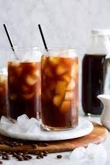

|
CAPPUCCINOSavor the timeless elegance of our Cappuccino—a perfect blend of rich espresso and velvety steamed milk, crowned with frothy foam. A harmonious symphony of bold and creamy, each sip is a moment of pure indulgence. |
|  |
Cold BrewSavor the crisp simplicity of our Cold Brew—a smooth, less acidic coffee brewed over time and served over ice. It's the perfect refreshment for those who crave a pure and invigorating coffee experience. |

|
MacchiatoSavor the simplicity of our Macchiato—an espresso "stained" with frothy milk, perfectly balancing bold intensity with a touch of creaminess. |

|
EspressoIndulge in the pure essence of coffee with our Espresso—a rich and robust shot, meticulously brewed to deliver an intense and flavorful experience in every sip. |